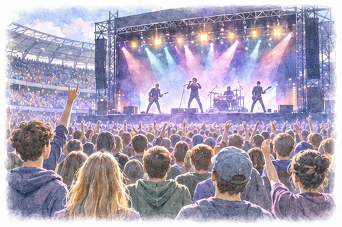

Listen to the text
Speed:

If you have ever been to a stadium, you have heard their music. "We Will Rock You" and "We Are the Champions" are played at sports events all over the world. They have become anthems for fans of every team. The band is Queen. Queen was formed in London in 1970. There were four musicians. Freddie Mercury was the lead singer, and he had one of the greatest voices in rock history. Brian May was the lead guitarist. Roger Taylor was the drummer, and John Deacon played the bass guitar. All four of them wrote songs. Queen was different from other bands. Their music mixed rock, opera and pop. Their concerts were real shows with lights and costumes. Freddie could make an audience of seventy thousand people sing together. In 1985 the band played at the famous Live Aid concert at Wembley Stadium in London. Many people call those twenty minutes the best live performance in rock history. Brian May has an unusual story. He built his guitar himself, together with his father, when he was a teenager. He has played it ever since. Before Queen became famous, he was studying astrophysics. He returned to science many years later and finished his work in 2007. He was also the chancellor of a university in Liverpool. Freddie Mercury died in 1991, but the music didn't stop. The band still tours with other singers, and new fans are born every year. Queen's songs are about fifty years old. And they still make people stand up.
Tap any sentence to hear it again.
Сподобалось? На сайті ще більше матеріалів для вчителів!
Reader, презентації, ігри, діагностичні та контрольні роботи до підручників 1-11 класів.
Перейти на сайт materials.allaenglish.com